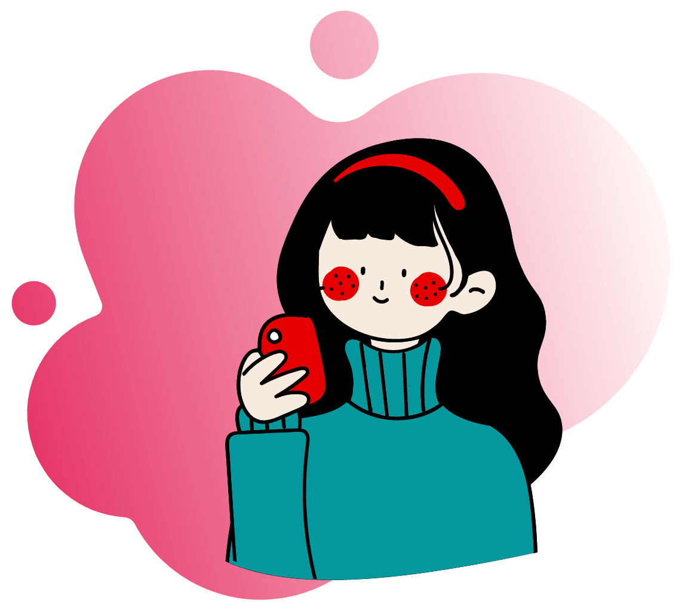

FEEL
APLICACIÓN DE APOYO PSICOLÓGICO
DISEÑO

REGISTRO
En el inicio de sesión podemos encontrar en la parte superior el nombre de la aplicación justo debajo un cuadro donde se puede visualizar tanto la imagen como dos barras de texto para ingresar el nombre y la contraseña dónde no solamente una breve descripción sino una imagen determinan que ese es el lugar designado para escribir el nombre del usuario y su contraseña. En caso de no estar registrados en la aplicación hay un botón en la parte inferior del lado izquierdo donde los usuarios pueden registrarse
.jpeg)
BIENVENIDO
Una vez que el usuario haya iniciado sesión encontrará una pantalla con 3 botones los dos primeros se encuentran en la parte superior uno qué retrocede y el otro que te envía al perfil del usuario En la parte central de la interfaz se puede visualizar una frase optimista antes de comenzar con el uso de la aplicación posteriormente en la parte inferior del lado izquierdo se encuentra el icono de la aplicación y del lado derecho se encuentra el botón de avanzar
.jpeg)
INICIO
En la principal pantalla de la aplicación se puede visualizar en el centro de esta 3 botones loscuales te lleva a las diferentes herramientas que conforman esta aplicación, de la misma forma que en las anteriores interfaces se puede visualizar en la parte superior del lado izquierdo el botón de retroceso y del lado derecho el botón del perfil en la parte inferior se encuentra el icono de la aplicación y un botón que conduce a la agenda psicológica
.jpeg)
NOTAS
Al presionar el botón ver notas el usuario va a cambiar de pantalla y le mostrará un breve historial de las notas que ha ido recolectando al igual que las pantallas pasadas el usuario puede regresar presionando el botón de la flechita del lado izquierdo
.jpeg)
AFIRMACIONES
La opción de afirmaciones muestra de manera aleatoria una frase positiva para el usuario este apartado tiene el fin de mantener una mentalidad positiva en el usuario de la misma forma que las anteriores pantallas se puede visualizar un botón en la parte superior izquierda para regresar y en la parte derecha para el perfil
AGENDA
La interfaz de agenda es breve pero importante ya que en esta se encuentran los números telefónicos de varias agencias que otorgan ayuda psicológica gratuita y está diseñada principalmente para que los usuarios puedan acudir a ellas en caso de emergencia
IMPLEMENTACIÓN
1.
2.
3.
4.
5.
6.
7.
8.
9.
10.
11.
12.
13.
14.
15.
16.
EVALUACIÓN

Se le presento al usuario (usuario de 14 años) la aplicación en forma física, se le dijo que era una aplicación para conocer y saber manejar sus emociones
 La aplicación es para adolescentes a partir de 14 años hasta adultos de 34 años, se encontró este usuario por que apenas va conociendo esas emociones y es una forma de saber como van a reaccionar este tipo de usuarios (adolescentes), por la forma de interfaz que se le intenta dar, llamar la atención de los padres y así poder presentarlo a sus hijos y juntos puedan llevar acabo un aprendizaje sobre las emociones.
La aplicación es para adolescentes a partir de 14 años hasta adultos de 34 años, se encontró este usuario por que apenas va conociendo esas emociones y es una forma de saber como van a reaccionar este tipo de usuarios (adolescentes), por la forma de interfaz que se le intenta dar, llamar la atención de los padres y así poder presentarlo a sus hijos y juntos puedan llevar acabo un aprendizaje sobre las emociones. Al usuario se le dio la aplicación y se le explico el como es su funcionamiento y su fin, con eso se le dio una seria de instrucciones para poder llevarlo acabo de la manera mas sencilla.
Problemas en el momento y solución
• Los colores no le llamo mucho la atención buscar colores que sean llamativos.
• Duro poco en la aplicación asi que prefiere una duración mas en las actividades que se tienen que hacer en ese momento.
• Los colores no le llamo mucho la atención buscar colores que sean llamativos.
• Duro poco en la aplicación asi que prefiere una duración mas en las actividades que se tienen que hacer en ese momento.